EL-ZURA
a tour guide designed for your convenience
EL-ZURA is a tourism site focused specifically on Africa.
It covers the top 15 places to visit in Africa to help visitors to navigate their way through the continent, while having lots of fun.
THE FOLLOWING ARE THE TOP 15 LANDMARKS IN AFRICA

- LOCATION:Tanzania
- DETAILS:
- Mount Kilimanjaro is the highest standing mountain in africa and in the whole world
- t is a dormant volcano and has three volcanic cones.
- The highest cone is called 'Kibo' and 'Uhuru Peak' is the highest peak on the volcanic rim of Kibo cone.
- it stands about 5,895 metres above sea level and about 4,900 metres above its plateau base
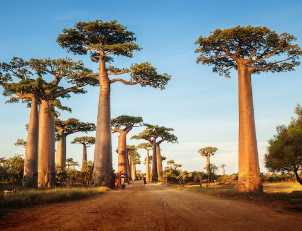
- LOCATION:Madagascar
- DETAILS:
- About 25 huge baobabs trees line a stretch of road about 30 km/ 18 miles to the north east of the city of Morondava.
- The majestic trees grow up to 30 m/ 100 ft tall.
- Baobab trees are also referred to as 'monkey bread trees' or 'upside-down trees'.
- The Baobab tree is often revered as a 'tree of life' as it has many uses: the massive tree provides
- shelter,
- food,
- water
- and natural medicine,
- and even the bark can be made into clothing.
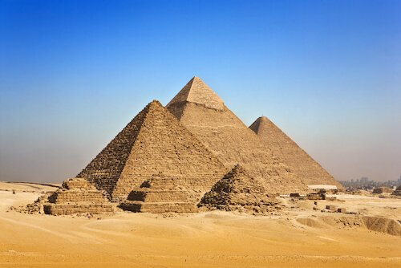
- LOCATION:Egypt
- DETAILS:
- The Great Pyramid of Giza is the oldest and largest of the three pyramids in a pyramid complex.
- The Great Pyramid is also referred to as the Pyramid of Khufu or the Pyramid of Cheops.
- They are thought to be tombs built in 2560 BC for Pharaoh Khufu (also called Cheops).
- It is built of huge blocks of limestone and granite and is 146 m/ 480 ft high.
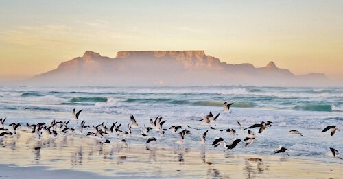
- LOCATION:South Africa
- DETAILS:
- The flat-topped Table mountain overlooks the city and the Atlantic Ocean.
- The massive Table Mountain plateau is framed by Devil's Peak to the left and smaller Lion's Head to the right.
- Table Mountain's highest peak is 'Maclear's Beacon' with 1086 m/ 3563 ft
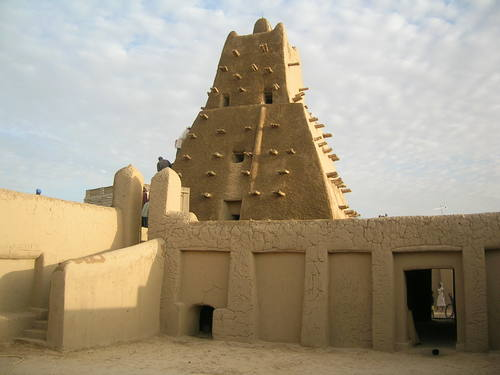
- LOCATION:Mali
- DETAILS:
- Timbuktu is located on the southern edge of the Sahara close to the Niger river and is surrounded by sand dunes.
- Timbuktu is a UNESCO world heritage site.
- The first settlement of Timbuktu dates back to the 12th century
- The city was one of the important Medieval towns where caravans traded desert salt of the Sahara with
- gold,
- ivory
- and slaves from the Sahel region.
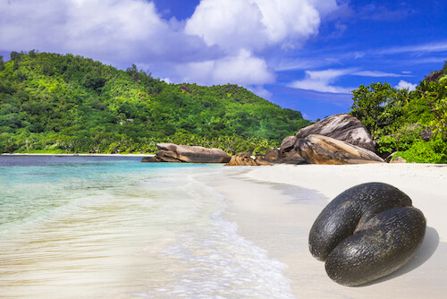
- LOCATION:Seychelles island of Praslin
- DETAILS:
- This rainforest is known for its palm trees with the huge coco-de-mer seeds.
- the largest seeds of any plants in the world! The seeds can weigh up to 17 kg/ 37 lb
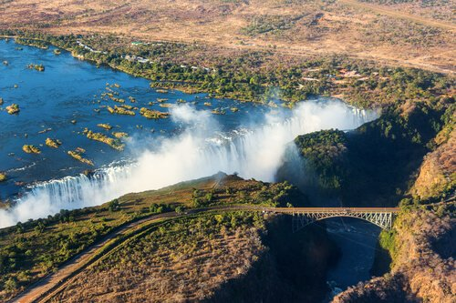
- LOCATION:Zambia
- DETAILS:
- Victoria Falls are the world's largest waterfalls during the wet season and one of the Seven Natural Wonders of the World.
- The Victoria Falls are more than 1 700 m/5 600 ft wide
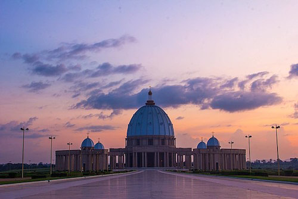
- LOCATION:Yamoussoukro in Côte d'Ivoire(Ivory Coast)
- DETAILS:
- The Catholic church was built between 1986 and 1989.
- This basilica is listed in the Guiness Book of World Records as the largest Christian church in the world!
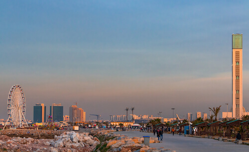
- LOCATION:Algeria
- DETAILS:
- The Great Mosque of Algiers, also called Djamaa El Djazair, is Africa's largest mosque.
- It was completed in 2019 after seven years of construction.
- The mosque has the tallest minaret in the world and is 265 m/ 870 ft high.
- The mosque can accommodate 120 000 worshippers
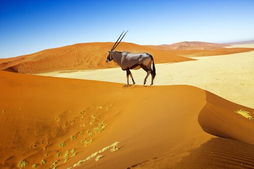
- LOCATION:Namibia
- DETAILS:
- The Dunes of the Namib are the highest dunes in the world standing up to 300 m/ 1000 ft high.
- They are made of quartz sand that has blown inland from the coastal areas of the desert.
- The further inland the dunes are located and the older the dunes are,
- the deeper orange they are due to the higher iron oxide coating of the sand.
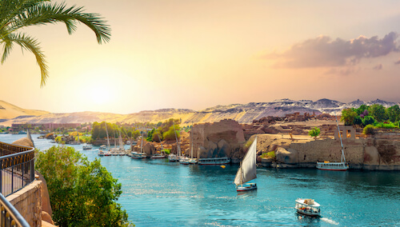
- LOCATION:Egypt
- DETAILS:
- The Nile is the longest river in Africa and passes through eleven countries in northern and eastern Africa and is the main water source in Egypt and Sudan.
- t has the length of 6852 km/4258 miles, making it the longest river worldwide
- The Nile has two sources:
- The White Nile coming from Lake Victoria in Tanzania
- and the Blue Nile coming from Lake Tana in Ethiopia.
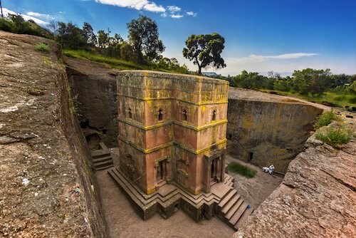
- LOCATION:Ethiopia
- DETAILS:
- This church was cut out of one huge block of rock in form of a cross.
- King Lalibela initiated the construction of the churches in the 12th century.
- It is said that King Lalibela called the area 'New Jerusalem' as at that time Muslims had stopped the Christians from going on pilgrimage to the Holy Land.
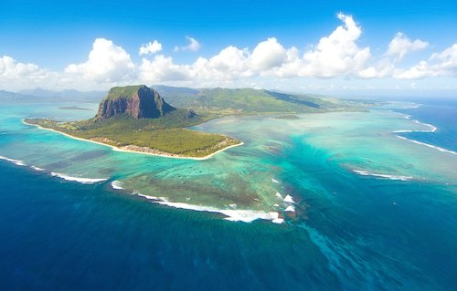
- LOCATION:Mauritius
- DETAILS:
- The mountain is a national heritage site as a symbol of reconciliation and forgiveness.
- It is famous for providing refuge to slaves who fled from their colonial masters in the late 18th and early 19th century.
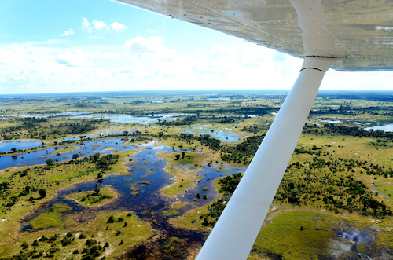
- LOCATION:Botswana
- DETAILS:
- The Okavango Delta is a very flat swampy region in Botswana that has one of the highest wildlife concentrations in the world.
- It is a huge green oasis in the middle of an arid region
- The river's waters stems mainly from the summer rainfalls in the Angolan highlands.
- The area covered by flooding is about 250 km by 150 km (155 miles by 93 miles) big
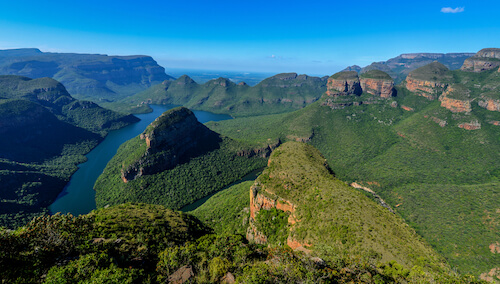
- LOCATION:South Africa
- DETAILS:
- South Africa changed the name to 'Motlatse River Canyon' in 2005.
- This canyon is known as the largest green canyon in the world.
- Molatse River Canyon stretches over 26 km/ 16 miles and is up to 800 m/ 2624 ft deep.
- Blyde means 'happy' in Dutch, and the river and canyon were first named by the early Dutch explorers.